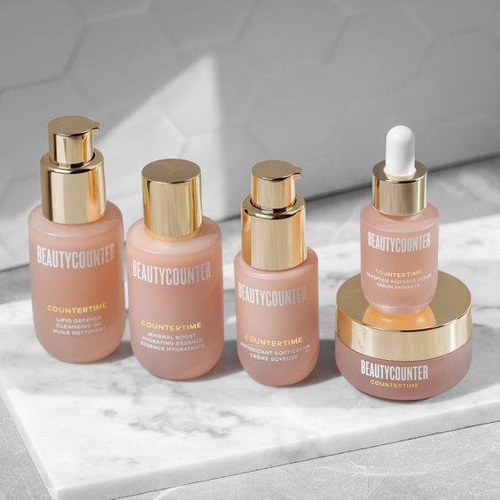

10 Jenis-jenis Perawatan wajah yang Wajib Dicoba
Rabu, 04 OKTOBER 2023

Pastikan untuk memilih produk skincare yang sesuai dengan jenis kulit Anda dan menjalani rutinitas perawatan wajah secara teratur. Juga, perhatikan bahwa reaksi kulit dapat bervariasi, jadi penting untuk melakukan uji coba produk terlebih dahulu jika Anda memiliki kulit sensitif atau rentan terhadap iritasi. Jika perlu, konsultasikan dengan seorang ahli kulit atau profesional perawatan kulit untuk rekomendasi yang lebih spesifik.berikut 10 penggunaan skincare yang bisa kalian coba :
- Pembersihan (Cleansing)
Membersihkan wajah dua kali sehari dengan pembersih wajah yang sesuai dengan jenis kulit Anda, Mencuci wajah dengan benar sangat penting untuk menjaga kulit wajah tetap bersih, sehat, dan bebas dari masalah kulit seperti jerawat.
- Eksfoliasi (Exfoliation)
Menggunakan produk eksfoliasi seperti scrub, asam glikolat, atau asam salisilat untuk mengangkat sel kulit mati dan merangsang regenerasi sel-sel kulit baru, Namun, penting untuk diingat bahwa eksfoliasi harus dilakukan dengan hati-hati dan sesuai dengan jenis kulit Anda. Eksfoliasi yang berlebihan atau kasar dapat merusak kulit Anda. Sebaiknya gunakan produk eksfoliasi yang sesuai dengan jenis kulit Anda dan ikuti petunjuk penggunaan dengan benar.
- Pemakaian Pelembap (Moisturizing)
Menggunakan pelembap sesuai dengan jenis kulit Anda untuk menjaga kelembaban kulit, Pelembab wajah adalah salah satu langkah penting dalam perawatan kulit yang membantu menjaga kelembapan kulit, melindungi kulit dari kerusakan lingkungan, dan meningkatkan kesehatan kulit secara keseluruhan.
- Perlindungan Matahari (Sunscreen)
Menggunakan tabir surya setiap hari untuk melindungi kulit dari sinar UV yang merusak dan penuaan kulit, Penggunaan sunscreen (tabir surya) adalah langkah penting dalam menjaga kulit Anda dari kerusakan akibat paparan sinar matahari, termasuk risiko kanker kulit, penuaan dini, dan masalah kulit lainnya.
- Serum
Menggunakan serum dengan bahan-bahan aktif seperti vitamin C, retinol, atau asam hialuronat untuk perawatan khusus, Menggunakan serum dalam rutinitas perawatan kulit adalah cara yang baik untuk memberikan nutrisi tambahan dan menargetkan masalah kulit tertentu.
- Masker Wajah (Face Masks)
Menggunakan masker wajah sesuai kebutuhan, seperti masker pembersih, masker pelembap, atau masker anti-penuaan, Penggunaan masker wajah adalah salah satu cara yang populer untuk merawat kulit dan memberikan manfaat tambahan, terutama ketika digunakan dengan benar.
- Perawatan Mata (Eye Care)
Menggunakan krim mata khusus untuk merawat area di sekitar mata, yang cenderung lebih tipis dan rentan terhadap keriput, Perawatan Mata (Eye Care) Menggunakan krim mata khusus untuk merawat area di sekitar mata, yang cenderung lebih tipis dan rentan terhadap keriput.
- Perawatan Bibir (Lip Care)
Menggunakan lip balm atau pelembap bibir untuk menjaga bibir tetap lembap, Perawatan Bibir (Lip Care): Menggunakan lip balm atau pelembap bibir untuk menjaga bibir tetap lembap.
- Perawatan Khusus (Special Treatments)
Jika Anda memiliki masalah kulit tertentu seperti jerawat, hiperpigmentasi, atau kulit sensitif, perawatan khusus seperti chemical peels, laser therapy, atau terapi microneedling bisa menjadi pilihan
- Perawatan Malam (Night Care)
Menggunakan produk perawatan malam seperti krim malam atau minyak wajah yang lebih kaya untuk membantu regenerasi kulit selama tidur, Perawatan kulit malam adalah bagian penting dari rutinitas perawatan kulit Anda. Selama tidur, kulit Anda memiliki kesempatan untuk pulih dan memperbaiki diri, sehingga memanfaatkan waktu ini dengan produk perawatan yang tepat dapat memberikan manfaat besar bagi kesehatan kulit Anda

Kunci wajah lembab dan bersih dengan mengurangi makanan yang mengandung kadar minyak berlebih dan mengurangi junkfood

Bahaya nya kandungan skincare bisa mengakibatkan kerusakan pada kulit wajah kita bahkan treatment saja tidak cukup

Nyata nya awet muda memang tidak semua karna gen tetapi bisa juga karena kita merawat muka dengan konsisten

Bukan hanya skincare dan treatment solusi untuk menjaga kondisi wajah kita, akan tetapi faktor makanan juga memengaruhi

Wajib sekali untuk melihat tabir surya sesuai dengan kondisi wajah kita kalian akan menemukan manfaat nya jika tidak salah pilih tabir surya

Susah menghilangkan pori-pori besar? banyak solusi di artikel ini yang dapat menjawab pertanyaanmu dan catat jika merasa penting

Air putih bukan hanya untuk kesehatan badan tetapi juga untuk wajah karena memiliki fungsi untuk melembabkan dan mengencangkan kulit

Banyak sekali manfaat daun kelor banyak sekali untuk kecantikan maupun perawatan wajah buka artikel untuk melihat lebih lanjut

Penggunaan skincare yang tepat juga memengaruhi cara kinerja skincare kalian jadi coba cek apakah kalian sudah tepat memakai skincare di jam tertentu?

Setiap proses pasti ada step by step begitu juga dengan urutan penggunaan skincare tujuannya agar kulit bisa merasakan setiap produk yang kita pakai

Memilih skincare bukan dilihat dari produk nya yang mahal tapi dilihat dari kandungan yang bisa mengatasi permasalahan kulit anda.

Hati-hati ketika kita memilih skincare karena tidak semua skincare itu aman untuk dipakai, jadi pilah yang baik untuk kulit anda agar aman dari bahaya nya orang jahat